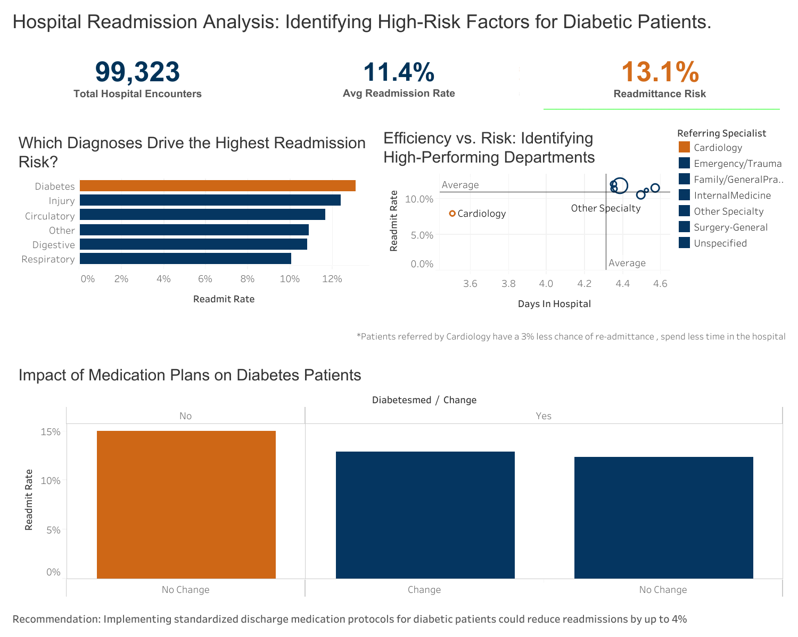

Healthcare Efficiency & Risk Analysis
Project Overview
Patient Readmission Risk Optimization
An analysis of 100,000+ hospital encounters to identify clinical predictors for patient readmission using PostgreSQL for data engineering and Tableau for visualization.

The Challenge
This data was missing about 50% of the referring specialist type data. I categorized the missing data as "other" or "Unknown" to avoid skewing the specialty benchmarking
Analytical Approach
Using Excel for data cleaning, SQL for data preparation, and Tableau for visualization, I analyzed factors contributing to increased hospital readmission rates. Areas explored included specialist referral type, primary diagnosis, comorbidities, and medication management. After identifying key patterns and trends, I focused on controllable variables that could help reduce readmission rates and improve patient outcomes.
Key Insights
The analysis revealed an overall patient readmission rate of 11.2%; however, patients diagnosed with diabetes experienced a higher readmission rate of 13.1%. That rate increased further to 15% among diabetes patients who did not receive a medication change upon discharge. Medication changes included either prescribing new diabetes medication or adjusting existing prescriptions. Another notable finding was that patients referred through Cardiology had a significantly lower readmission rate of 8%.
Recommendations
To reduce the 15% risk identified in the "Treatment Gap," the hospital should implement a mandatory medication review for all diabetic patients prior to discharge, specifically targeting those whose prescriptions remained unchanged during their stay.
The hospital should also implement and evaluate Cardiology’s discharge and follow-up protocols across other clinical departments to help reduce hospital-wide readmission rates. Since Cardiology consistently achieves below-average readmission rates, even among high-risk patients, its care coordination strategies may serve as an effective model for improving outcomes in other specialties.
Project Tech Stack
- Database: PostgreSQL
- Visualization: Tableau
- Version Control: GitHub
- Tools: VS Code